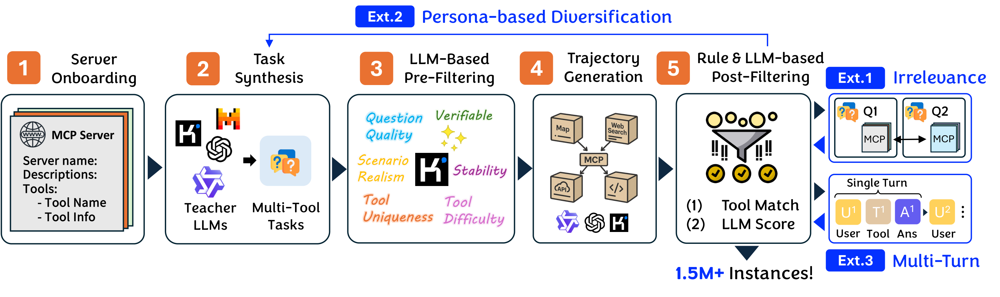
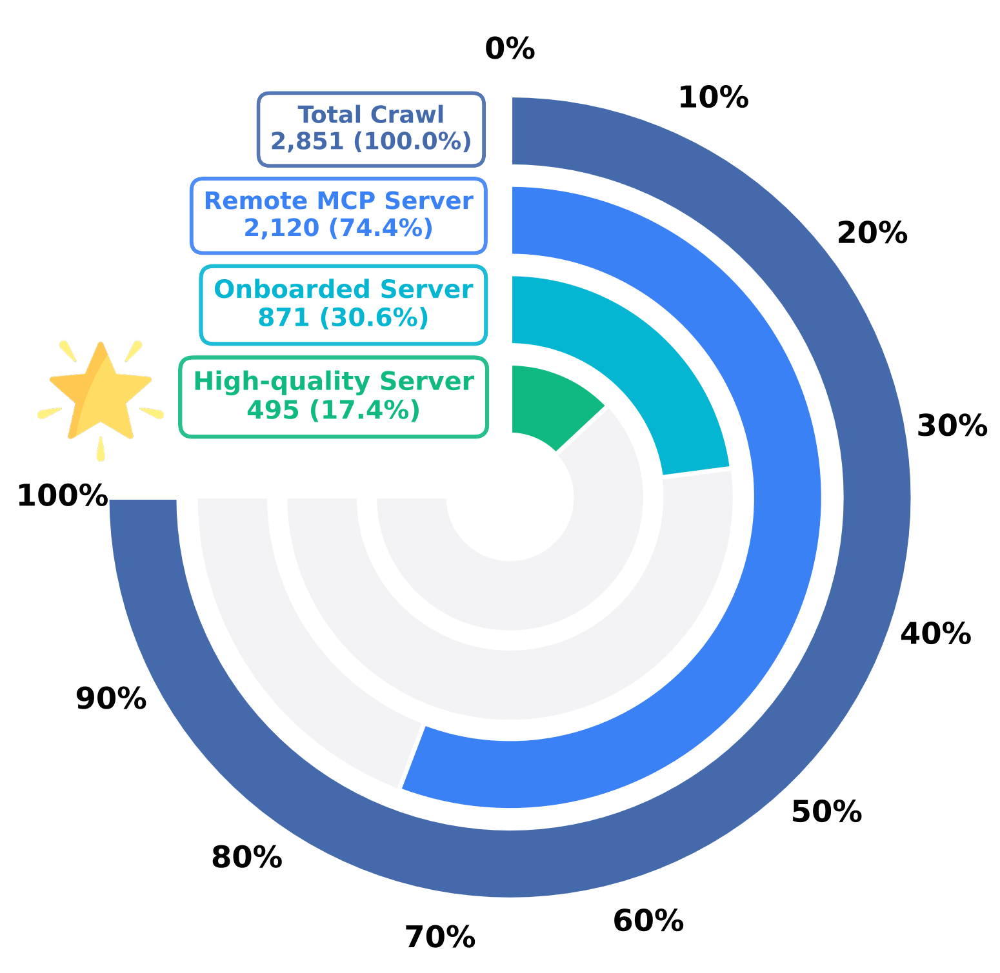
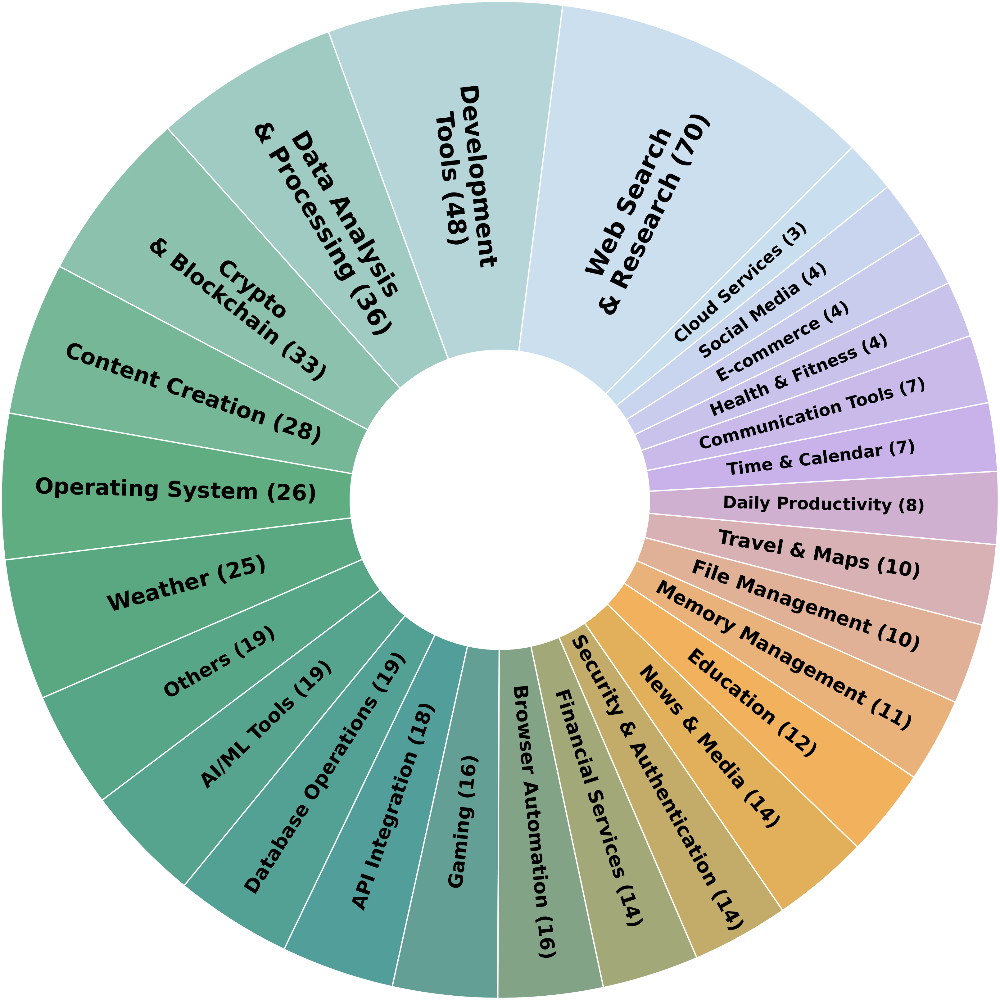
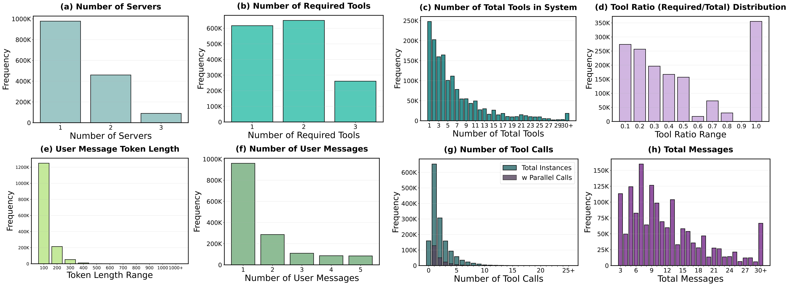
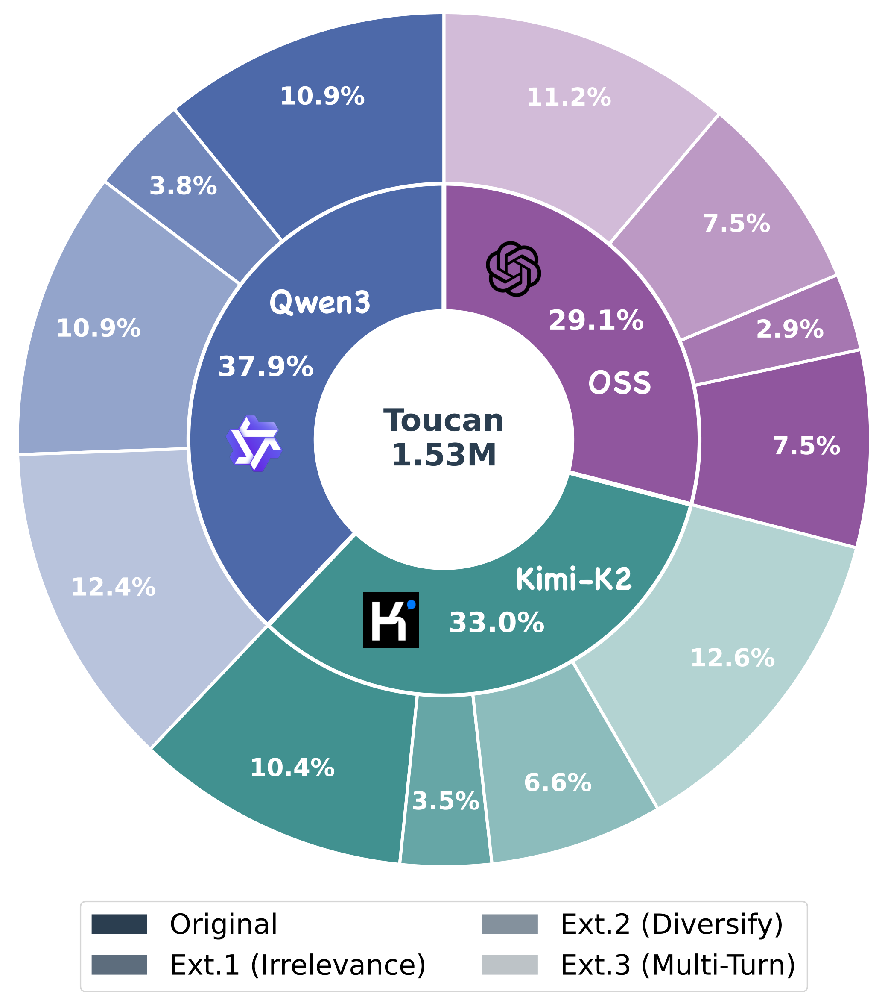
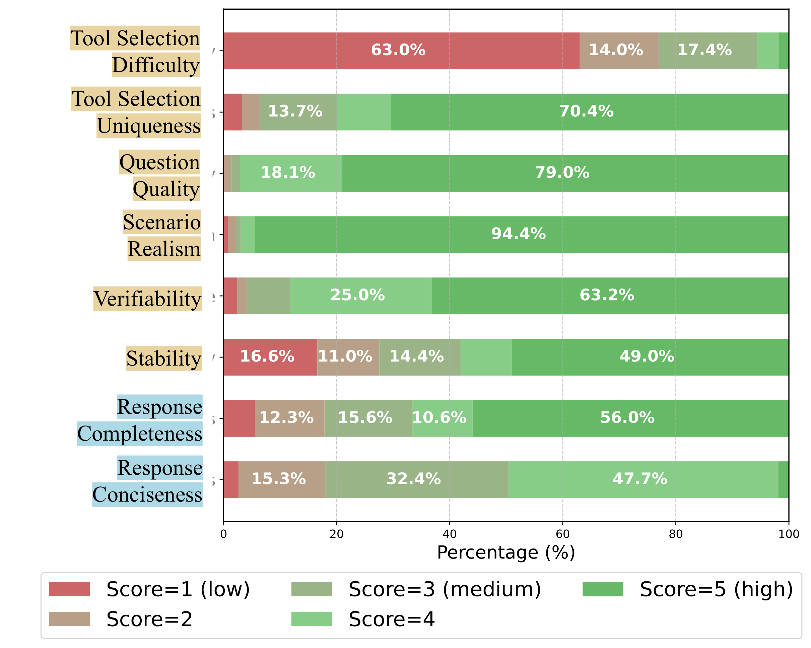
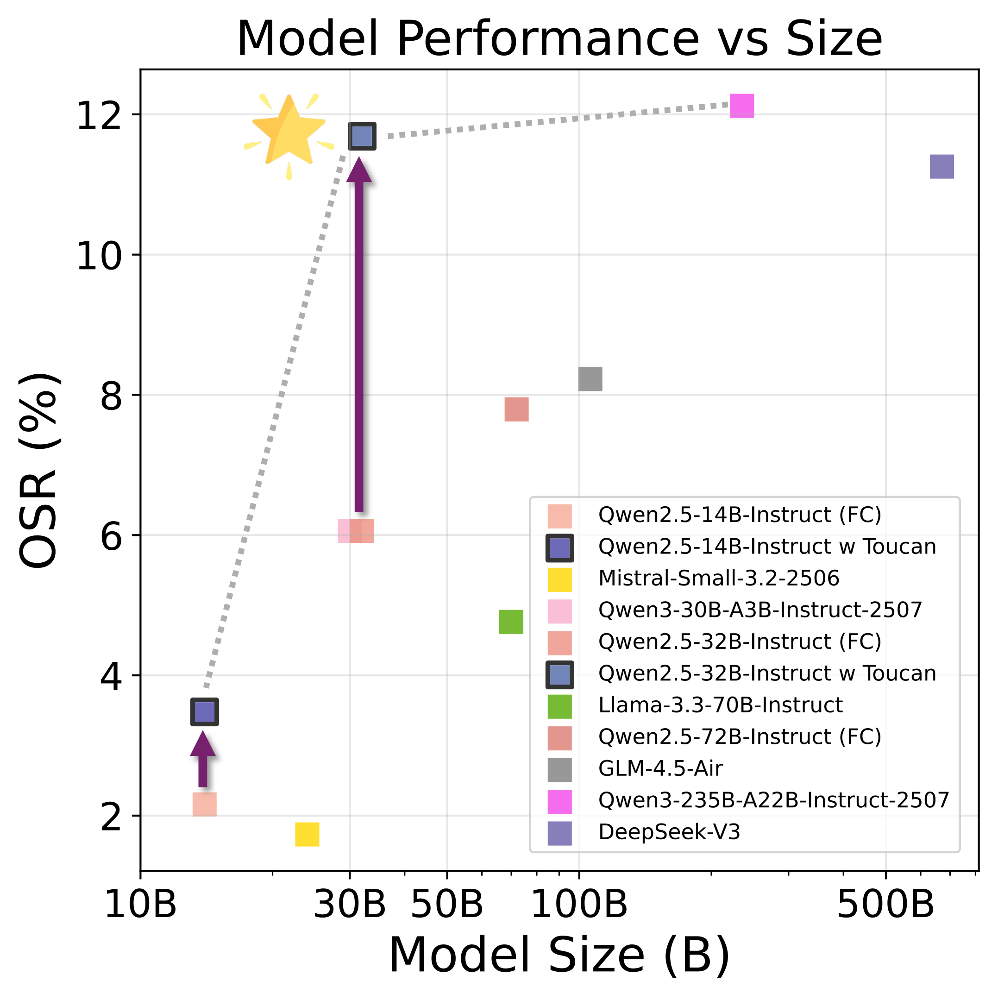

这是一篇以数据集为核心贡献的工作，而且开源得相当彻底：数据集、完整数据合成 pipeline 代码、以及三个训练好的 checkpoint 都已公开，许可证宽松。
| 类型 | 内容 | 链接 / 说明（已核实） |
|---|---|---|
| 数据集 ✔ | Toucan-1.5M，parquet 格式，按 trajectory generator 分 4 个 config：Kimi-K2（518,516 条）、OSS（457,130）、Qwen3（551,613），外加一个已筛好的 SFT 子集（119,287） |
hf.co/datasets/Agent-Ark/Toucan-1.5M；许可证 apache-2.0；核实时 213 likes、5.4k 下载 |
| 代码 ✔ | 完整数据生成 pipeline（仓库 ./datagen 目录），并内置 Qwen-Agent 源码用于跑 trajectory |
github.com/TheAgentArk/Toucan；许可证 MIT（已核 LICENSE 文件，Copyright 2025 Agent Ark）；核实时约 245 stars |
| 权重 ✔ | 三个 SFT checkpoint：Toucan-Qwen2.5-7B/14B/32B-Instruct-v0.1 | huggingface.co/Agent-Ark 下三个模型均可下载（v0.1） |
| Benchmark | 本文不提出新 benchmark，沿用现成的 BFCL V3、τ-Bench / τ²-Bench、MCP-Universe | 评测按各自官方 setup 运行（MCP-Universe 用其本地评测环境） |
| Demo / 主页 ✘ | 未见独立 project page / demo | — |
说明：数据由若干开源 LLM（GPT-OSS、Kimi-K2、Qwen3、Mistral / DevStral 系列等）合成、并经真实 MCP server 执行，下游使用仍需留意各 teacher 模型与各 MCP server 自身的条款；论文也在 Ethics 部分给出了基于 GitHub 的 take-down 流程。
LLM agent 要做的事是：在可能很大的工具集里找对 tool、用正确参数调用、在 tool 失败时优雅处理、再把结果综合成符合上下文的回答。Model Context Protocol（MCP）（Anthropic 2025）给出了一套标准化接口，让 LLM 可以统一地「发现 / 调用 / 执行」外部工具，第一次让「把真实世界环境批量接进 agent」在工程上变得可行。
但作者指出，开源社区真正的瓶颈在数据：训练 agentic LLM 需要大量「task–trajectory pair」，trajectory 要完整记录 planning、tool call、tool response、最终回复这条链。现有开源数据集普遍有四类硬伤——
论文用对比表（原文 Table 1）把这点讲透：现有最大的开源 tool 数据 Nemotron(Tools) 约 31 万条，且工具规格 / 响应来源「不公开」；APIGen-MT-5K、ToolACE、Hermes-FC-V1 都只有 1 万量级。TOUCAN 直接做到 1,527,259 条、含 567,262 条多轮对话，工具规格是 Real（真实 MCP）、tool response 是 Executed（真执行），并覆盖 single / parallel / multi-step 以及「无关 / 不可解」（irrelevance）这一关键 edge case。
每条样本包含：task description、完整 agent trajectory（及其用到的 tools）、quality / classification 标注、以及丰富 metadata。数据构造是一条系统化的五阶段流水线：① MCP server onboarding → ② task synthesis → ③ task filtering（LLM pre-filtering）→ ④ trajectory generation → ⑤ rule & LLM post-filtering；之后再叠加三个 extension（Irrelevance / Persona 多样化 / Multi-turn）补足真实性与难度。

「环境」来自 Smithery（MCP server 的平台 / 注册表）与 GitHub 上的 MCP specification。每个 server 带一份结构化 JSON，内含机器可读的工具定义。作者从约 2,800 个 server 的初始爬取出发，做两步关键过滤：(1) 只保留能通过 streamable HTTP 远程访问的 server（保证能真正跑 trajectory）；(2) 剔除需要第三方凭证（API key 等）才能调用的 server（保证可达性与可复现性）。这一步把数据砍到 30.6%（871 个 server）。最后对每个 server 生成一小批测试问题去实测每个工具，把会报错 / 失灵工具所在的 server 也筛掉，最终得到 495 个高质量 MCP server（其上含 2,000+ 工具），覆盖广泛领域。


一个 task = 一个 question + 期望用到的若干工具名。为避免单一模型偏置，作者用五个开源 LLM（Mistral-Small、DevStral-Small、GPT-OSS、Kimi-K2、Qwen3-32B）作为 task generator，并设最大工具数 $N=3$。三种采样策略：
用 Kimi-K2 作为 annotator（在「与人类标注相关性」和「成本」间最平衡），对每个任务沿六个维度用 1–5 Likert 量表打分并过滤：Tool Selection Difficulty（选对工具的难度）、Tool Selection Uniqueness（工具组合是否唯一、有无别的可行解）、Question Quality（清晰度 / 具体性 / 有效性）、Scenario Realism（场景真实性）、Verifiable（答案是否易验证）、Stability（工具输出是否随时间 / 地理 / 随机性保持一致）。
对通过过滤的任务，用三个不同家族的 teacher LLM（GPT-OSS-120B、Kimi-K2、Qwen3-32B）× 两个 agent framework（Qwen-agent、OpenAI-agent）去真实环境里跑，收集含 tool call、tool response、reasoning 的完整 trajectory。模型与 server 都远程部署、经 streamable HTTP 访问——即 tool response 是真从 MCP server 执行回来的。
规则启发式先排掉：起不来 agent / 连不上远程 MCP server、不含任何 tool call、tool response 报错、或 trajectory 里出现本地文件系统路径（泄漏 / 不可复现）的样本；还会校验是否按正确顺序用了任务要求的工具，并报告 desired tool use percentage（要求工具的覆盖率）与 order correctness（调用顺序是否正确）。之后用 GPT-OSS-120B 作 judge，标两维：Completeness（是否端到端满足用户请求）与 Conciseness（是否用最少必要步骤解决）。双阶段过滤保证只留下「高质量、简洁、可执行」的轨迹。
核心 pipeline 产出的多是「单轮、且因为可见工具都相关、选工具太容易」的轨迹。为此在 Stage 1–5 之外加三种扩展：



每条样本的 schema 字段（见 HF 数据卡）：uuid、subset_name（single-turn-original / irrelevant / single-turn-diversify / multi-turn）、messages（带 chat template 的完整 trajectory）、question、available_tools（上下文里可见的工具）、target_tools（种子工具，格式 Server_Name::Tool_Name）、question_quality_assessment、response_quality_assessment、metadata（原始 MCP server 数据 + LLM 标注）。数据集以 parquet 提供，Kimi-K2 / OSS / Qwen3 三个全量 config 与一个 SFT 子集分开，便于按需取用。
训练：在 TOUCAN 上对三个开源模型做 SFT——Qwen2.5-7B-Instruct、Qwen2.5-14B-Instruct、Qwen2.5-32B-Instruct。由于全量数据很大，作者只从一个高质量子集采样训练：筛选标准为 question quality & scenario realism 均为 5、response completeness & conciseness ≥ 4、desired tool use percentage = 1.0（轨迹完整覆盖任务要求的全部工具）。再做类别再平衡，最终 SFT 集合共 119.3K 条 = 28.3K（原始 pipeline）+ 40K（Ext.1 Irrelevance）+ 15.8K（Ext.2 Diversify）+ 35.2K（Ext.3 Multi-Turn）。评测在 8×H100 上进行。
三个 benchmark（考点 / 指标，方向均为越高越好）：
TOUCAN-tuned 模型相对各自 base 一致提升，且超过更大的闭源对手。Toucan-Qwen2.5-32B 拿到 70.45% overall，压过 GPT-4.5-Preview（70.32）、GPT-4.1（68.69）、DeepSeek-V3（64.71），并在 Multi-Turn 子集拿到全表最高的 46.50%。提升幅度随模型增大而增大（7B +3.16、14B +7.40、32B +8.72），multi-turn 一项尤其显著（如 32B 从 26.38 → 46.50）。
| Model | Overall | Non-Live AST | Live AST | Multi-Turn | Relevance | Irrelevance |
|---|---|---|---|---|---|---|
| 大模型 / 闭源对照 | ||||||
| DeepSeek-V3 | 64.71 | 88.54 | 77.34 | 29.87 | 83.33 | 76.49 |
| Qwen2.5-72B-Instruct | 64.37 | 87.56 | 78.68 | 29.38 | 72.22 | 77.41 |
| Qwen3-235B-A22B | 67.94 | 87.90 | 77.03 | 40.12 | 83.33 | 76.32 |
| Qwen3-32B | 69.25 | 88.90 | 77.83 | 43.12 | 72.22 | 75.79 |
| o3-Mini | 64.61 | 86.15 | 79.08 | 28.75 | 72.22 | 82.96 |
| GPT-4.1 | 68.69 | 85.42 | 79.92 | 40.50 | 77.78 | 85.95 |
| GPT-4.5-Preview | 70.32 | 86.12 | 79.34 | 45.38 | 66.67 | 83.64 |
| base → +TOUCAN | ||||||
| Qwen2.5-7B-Instruct | 55.10 | 84.19 | 72.32 | 12.88 | 72.22 | 67.93 |
| + TOUCAN | 58.26 (+3.16) | 78.52 | 74.50 | 22.62 | 66.67 | 75.18 |
| Qwen2.5-14B-Instruct | 57.69 | 83.38 | 73.70 | 19.75 | 83.33 | 68.46 |
| + TOUCAN | 65.09 (+7.40) | 85.42 | 76.01 | 35.25 | 72.22 | 75.96 |
| Qwen2.5-32B-Instruct | 61.73 | 85.58 | 76.01 | 26.38 | 72.22 | 72.68 |
| + TOUCAN | 70.45 (+8.72) | 87.12 | 78.90 | 46.50 | 77.78 | 78.10 |
原文 Table 2（%）。括号内为相对各自 base 的 overall 提升。注：Qwen3-32B（69.25）作为更强的 base 仍领先，作者的主张是「超过更大的 production / 闭源 LLM（如 DeepSeek-V3、GPT-4.5-Preview）并在 multi-turn 取得最优」，并非压过所有模型。
在 airline / retail / telecom 三域，TOUCAN-tuned 一致提升。三个规模在 τ-bench 平均分上分别 +7.45 / +4.39 / +3.57，在 τ²-bench 上 +1.69 / +5.97 / +2.20，说明多轮扩展确实增强了「动态用户交互下的多轮推理」（telecom 子项偶有回落，见下表 7B 行）。
| Model | τ Avg | τ Airline | τ Retail | τ² Avg | τ² Airline | τ² Retail | τ² Telecom |
|---|---|---|---|---|---|---|---|
| Qwen2.5-7B-Instruct | 15.03 | 8.75 | 21.30 | 16.08 | 14.00 | 17.54 | 16.70 |
| + TOUCAN | 22.48 (+7.45) | 15.50 | 29.46 | 17.77 | 20.00 | 22.80 | 10.50 |
| Qwen2.5-14B-Instruct | 30.85 | 17.25 | 44.46 | 24.46 | 12.00 | 41.20 | 20.18 |
| + TOUCAN | 35.24 (+4.39) | 22.00 | 48.48 | 30.43 (+5.97) | 22.00 | 49.10 | 20.18 |
| Qwen2.5-32B-Instruct | 38.76 | 26.00 | 51.52 | 29.40 | 18.00 | 49.10 | 21.11 |
| + TOUCAN | 42.33 (+3.57) | 29.00 | 55.65 | 31.60 | 22.00 | 52.60 | 20.20 |
原文 Table 3（%）。
这是最能体现「真实 MCP 训练」价值的一项。论文以柱状图（Figure 7）和「性能 vs 规模」散点（Figure 8）呈现，未给出逐模型数值表，因此这里只复述其定性结论：TOUCAN-tuned 模型在六域大多显著超过同规模乃至更大的开源模型；其 32B 模型在 3D Design 上拿到最高分、在 Financial Analysis 上表现强，甚至超过 Llama-3.3-70B-Instruct、Qwen2.5-72B-Instruct、GLM-4.5-Air（106B）、DeepSeek-V3（671B）等大得多的前沿开源模型。值得注意的是，benchmark 里多数 server 需要复杂配置、因而并未进入 TOUCAN 的数据合成，模型仍能迁移涨分，说明「见过多样工具」本身就能增强 agentic 能力。

在 Qwen2.5-14B-Instruct 上对 TOUCAN 逐步叠加扩展，隔离每个 extension 的贡献（原文 Figure 9）。结论是每个组件都有正贡献：单 single-turn 子集已把 BFCLv3 从 57.69 抬到 60.16；Irrelevance 把 BFCLv3 进一步推到 64.74（抗幻觉 / irrelevance 场景受益最直接）；Multi-Turn 则把 τ-bench 两项明显拉高（Airline 17.25→22.00、Retail 44.46→48.48），并把 BFCLv3 推到 65.09。
| 训练数据（累加） | BFCLv3 | τ-bench Airline@1 | τ-bench Retail@1 |
|---|---|---|---|
| Qwen2.5-14B-Instruct（base） | 57.69 | 17.25 | 44.46 |
| + Single Turn | 60.16 | 15.50 | 36.95 |
| + Irrelevance | 64.74 | 16.75 | 41.63 |
| + Diversify | 64.56 | 17.25 | 43.70 |
| + Multi-Turn（= 完整 TOUCAN） | 65.09 | 22.00 | 48.48 |
原文 Figure 9（%）。可见 single-turn 单独使用时反而压低了 τ-bench（多轮能力没被覆盖），必须靠 Multi-Turn 扩展补回——印证了三个 extension 的设计动机。
老实说在哪：(1) MCP-Universe 论文只给柱状 / 散点图、无逐模型数值表，且其绝对成功率整体偏低（benchmark 本身很难，多数 server 未进训练）；(2) BFCL 上更强的 base（Qwen3-32B 69.25）仍领先 Toucan-Qwen2.5-32B（70.45 仅略高，且二者 base 不同）；(3) τ²-bench 的 telecom 子项在 7B 上反而下降，提升并非处处单调。
作者把领域分成「过去 / 现在 / 未来」三段：过去是 Gorilla/BFCL、ToolAlpaca、ToolLLM、API Pack/Blend、APIGen 等围绕 REST API 与函数调用的工具数据；现在是 Kimi-K2、GLM-4.5 这类强调 tool use 的前沿模型，以及 BFCL、τ-Bench、ACEBench 等 benchmark，但开源训练数据仍「不透明 / 太小 / 用 LLM 模拟工具」；未来是一批并行涌现的 MCP benchmark（MCP-Radar、MCP-Bench、MCP-Universe、MCP-AgentBench、MCPMark 等）。TOUCAN 的定位很清楚——它不造新 benchmark，而是补上「面向 MCP 时代的、大规模、真实执行的开源训练数据」这块缺失的拼图，把评测端的进步对接到训练端。